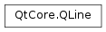

QLine¶
Synopsis¶
Functions¶
- def
__eq__(d) - def
__mul__(, m) - def
__mul__(, m) - def
__ne__(d) - def
__reduce__() - def
__repr__() - def
center() - def
dx() - def
dy() - def
isNull() - def
p1() - def
p2() - def
setLine(x1, y1, x2, y2) - def
setP1(p1) - def
setP2(p2) - def
setPoints(p1, p2) - def
toTuple() - def
translate(dx, dy) - def
translate(p) - def
translated(dx, dy) - def
translated(p) - def
x1() - def
x2() - def
y1() - def
y2()
Detailed Description¶
The
PySide2.QtCore.QLineclass provides a two-dimensional vector using integer precision.A
PySide2.QtCore.QLinedescribes a finite length line (or a line segment) on a two-dimensional surface. The start and end points of the line are specified using integer point accuracy for coordinates. Use thePySide2.QtCore.QLineFconstructor to retrieve a floating point copy.
The positions of the line’s start and end points can be retrieved using the
PySide2.QtCore.QLine.p1(),PySide2.QtCore.QLine.x1(),PySide2.QtCore.QLine.y1(),PySide2.QtCore.QLine.p2(),PySide2.QtCore.QLine.x2(), andPySide2.QtCore.QLine.y2()functions. ThePySide2.QtCore.QLine.dx()andPySide2.QtCore.QLine.dy()functions return the horizontal and vertical components of the line. UsePySide2.QtCore.QLine.isNull()to determine whether thePySide2.QtCore.QLinerepresents a valid line or a null line.Finally, the line can be translated a given offset using the
PySide2.QtCore.QLine.translate()function.


-
class
PySide2.QtCore.QLine¶ -
class
PySide2.QtCore.QLine(QLine) -
class
PySide2.QtCore.QLine(pt1, pt2) -
class
PySide2.QtCore.QLine(x1, y1, x2, y2) Parameters: - x2 –
PySide2.QtCore.int - pt2 –
PySide2.QtCore.QPoint - pt1 –
PySide2.QtCore.QPoint - x1 –
PySide2.QtCore.int - y2 –
PySide2.QtCore.int - QLine –
PySide2.QtCore.QLine - y1 –
PySide2.QtCore.int
Constructs a null line.
Constructs a line object that represents the line between
p1andp2.Constructs a line object that represents the line between (
x1,y1) and (x2,y2).- x2 –
-
PySide2.QtCore.QLine.__reduce__()¶ Return type: PyObject
-
PySide2.QtCore.QLine.__repr__()¶ Return type: PyObject
-
PySide2.QtCore.QLine.center()¶ Return type: PySide2.QtCore.QPointReturns the center point of this line. This is equivalent to (
PySide2.QtCore.QLine.p1()+PySide2.QtCore.QLine.p2()) / 2, except it will never overflow.
-
PySide2.QtCore.QLine.dx()¶ Return type: PySide2.QtCore.intReturns the horizontal component of the line’s vector.
See also
-
PySide2.QtCore.QLine.dy()¶ Return type: PySide2.QtCore.intReturns the vertical component of the line’s vector.
See also
-
PySide2.QtCore.QLine.isNull()¶ Return type: PySide2.QtCore.boolReturns
trueif the line is not set up with valid start and end point; otherwise returnsfalse.
-
PySide2.QtCore.QLine.__ne__(d)¶ Parameters: d – PySide2.QtCore.QLineReturn type: PySide2.QtCore.boolReturns
trueif the givenlineis not the same as this line.A line is different from another line if any of their start or end points differ, or the internal order of the points is different.
-
PySide2.QtCore.QLine.__mul__(m)¶ Parameters: m – PySide2.QtGui.QTransformReturn type: PySide2.QtCore.QLine
-
PySide2.QtCore.QLine.__mul__(m) Parameters: m – PySide2.QtGui.QMatrixReturn type: PySide2.QtCore.QLine
-
PySide2.QtCore.QLine.__eq__(d)¶ Parameters: d – PySide2.QtCore.QLineReturn type: PySide2.QtCore.boolReturns
trueif the givenlineis the same as this line.A line is identical to another line if the start and end points are identical, and the internal order of the points is the same.
-
PySide2.QtCore.QLine.p1()¶ Return type: PySide2.QtCore.QPointReturns the line’s start point.
-
PySide2.QtCore.QLine.p2()¶ Return type: PySide2.QtCore.QPointReturns the line’s end point.
-
PySide2.QtCore.QLine.setLine(x1, y1, x2, y2)¶ Parameters: - x1 –
PySide2.QtCore.int - y1 –
PySide2.QtCore.int - x2 –
PySide2.QtCore.int - y2 –
PySide2.QtCore.int
Sets this line to the start in
x1,y1and end inx2,y2.- x1 –
-
PySide2.QtCore.QLine.setP1(p1)¶ Parameters: p1 – PySide2.QtCore.QPointSets the starting point of this line to
p1.
-
PySide2.QtCore.QLine.setP2(p2)¶ Parameters: p2 – PySide2.QtCore.QPointSets the end point of this line to
p2.
-
PySide2.QtCore.QLine.setPoints(p1, p2)¶ Parameters: - p1 –
PySide2.QtCore.QPoint - p2 –
PySide2.QtCore.QPoint
Sets the start point of this line to
p1and the end point of this line top2.- p1 –
-
PySide2.QtCore.QLine.toTuple()¶ Return type: PyObject
-
PySide2.QtCore.QLine.translate(dx, dy)¶ Parameters: - dx –
PySide2.QtCore.int - dy –
PySide2.QtCore.int
This is an overloaded function.
Translates this line the distance specified by
dxanddy.- dx –
-
PySide2.QtCore.QLine.translate(p) Parameters: p – PySide2.QtCore.QPointTranslates this line by the given
offset.
-
PySide2.QtCore.QLine.translated(p)¶ Parameters: p – PySide2.QtCore.QPointReturn type: PySide2.QtCore.QLineReturns this line translated by the given
offset.
-
PySide2.QtCore.QLine.translated(dx, dy) Parameters: - dx –
PySide2.QtCore.int - dy –
PySide2.QtCore.int
Return type: This is an overloaded function.
Returns this line translated the distance specified by
dxanddy.- dx –
-
PySide2.QtCore.QLine.x1()¶ Return type: PySide2.QtCore.intReturns the x-coordinate of the line’s start point.
See also
-
PySide2.QtCore.QLine.x2()¶ Return type: PySide2.QtCore.intReturns the x-coordinate of the line’s end point.
See also
-
PySide2.QtCore.QLine.y1()¶ Return type: PySide2.QtCore.intReturns the y-coordinate of the line’s start point.
See also
-
PySide2.QtCore.QLine.y2()¶ Return type: PySide2.QtCore.intReturns the y-coordinate of the line’s end point.
See also
© 2018 The Qt Company Ltd. Documentation contributions included herein are the copyrights of their respective owners. The documentation provided herein is licensed under the terms of the GNU Free Documentation License version 1.3 as published by the Free Software Foundation. Qt and respective logos are trademarks of The Qt Company Ltd. in Finland and/or other countries worldwide. All other trademarks are property of their respective owners.